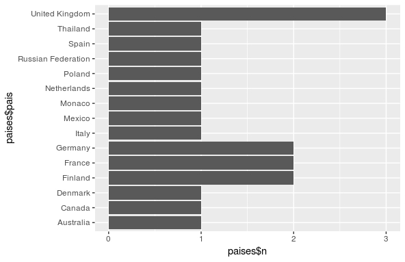
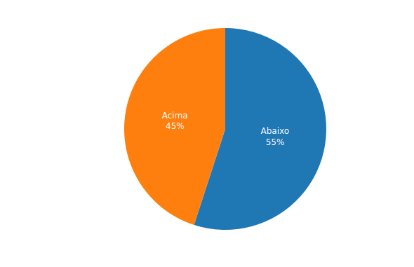
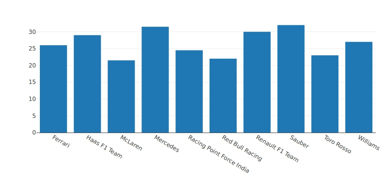

Estatísticas da Temporada 2019 de Formula 1
Conheça alguns números da nova temporada de formula 1.

Em mais um anos de 2019, temos mais uma das temporadas da formula 1, uma das maiores e mais emocionantes competição de automobilismo do planeta.
Para começarmos vamos ver sobre as origens dos pilotos que fazem parte dessa temporada neste ano.
Países
Este ano vários dos pilotos tem origem no velho continente. Tirando quatro pilotos desta temporada, Todos os outros pilotos fazem parte deste continente.
Podemos ver que a quantidade de pilotos que o Reino Unido é de três, e Finlândia, França e Alemanha são quatro pilotos cada uma e de outros países, são só de um piloto por país. Esse grande número de pilotos de um só país, vem das trocas que aconteceram estes anos. Veja com eu extrai essa informação:
paises <- dplyr::count(pilotos,pais)
Idades
Um dos dados que podemos utilizar para saber mais sobre os pilotos de formula 1, é a idade dos mesmos, sendo que a média dos pilotos desse ano é de 26 anos. Sendo que as escuderias estão apostando ainda mais em pilotos jovens como o Caso do piloto inglês Lando Norris, com 19 anos em muitos países esse piloto recém adquiria a sua carteira de motorista. Como mostra o gráfico:
Este gráfico de torta mostra que a maioria dos pilotos está abaixo da média de idade da categoria.Em poucos casos temos pilotos como o Kimi Raikonen, Atualmente na Sauber, que consegue se manter numa das categorias aonde muitos dos seus companheiros tem idades abaixo dos trinta. Como mostra o gráfico com as medias das idades dos pilotos por equipes.
Para descobrirmos quais pilotos se encaixam na Média, Mediana, os mais velhos e mais jovens:
filter(pilotos2, pilotos2$idades == max(pilotos2$idades)) # Numero Nome datanascimento pais equipe titulos idades 1 7 Kimi Raikkonen 1979-10-17 Finland Sauber 1 39 filter(pilotos2, pilotos2$idades == min(pilotos2$idades)) # Numero Nome datanascimento pais equipe titulos idades 1 4 Lando Norris 1999-11-13 United Kingdom McLaren 0 19 filter(pilotos2,pilotos2$idades == as.integer(mean(pilotos2$idades))) # Numero Nome datanascimento pais equipe titulos idades 1 20 Kevin Magnussen 1992-10-05 Denmark Haas F1 Team 0 26 filter(pilotos2,pilotos2$idades == as.integer(median(pilotos2$idades))) # Numero Nome datanascimento pais equipe titulos idades 1 99 Antonio Giovinazzi 1993-12-14 Italy Sauber 0 25